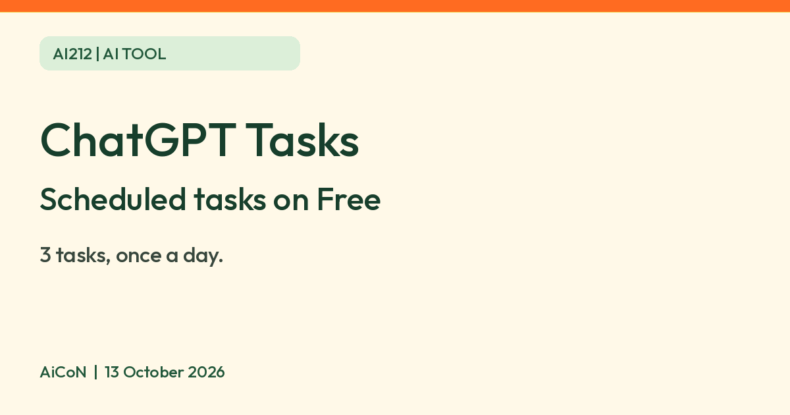

ChatGPT scheduled tasks on the Free plan: 3 tasks, once a day, and what is locked
OpenAI says Free ChatGPT users can schedule up to 3 tasks, one-time or once a day, but not hourly or at exact times. Here is what is locked and what to keep out of task text.

What it is
Scheduled tasks let ChatGPT do a job later, or on a repeat, and tell you the result. OpenAI's help page says ChatGPT can run one-time or recurring tasks and monitor for changes. Its examples include a daily brief and "Let me know when my package is delivered". You manage them on a Scheduled page.
Is it free?
Yes, with limits. OpenAI's help page says scheduled tasks are available to eligible ChatGPT Free, Go, Plus, Pro, Business, Enterprise and Edu users, subject to account and workspace settings. An eligible Free account can try it without a paid plan; it may not appear for every account or app.
What Free users get, per OpenAI
- Up to 3 active scheduled tasks.
- One-time tasks, or recurring tasks that run no more than once a day.
- Flexible time windows such as morning, afternoon or night. Hourly schedules and exact delivery times need a paid plan.
- Tasks that react to events in Gmail, Slack or GitHub are not available on Free or Go.
- Tasks do not support voice chats or GPTs. A task made inside a project cannot use that project's files.
- Model access and usage limits still depend on your plan. OpenAI does not give a number on that page.
How to set one up
- Ask ChatGPT for the job in plain words, for example "Remind me every morning to check the weather."
- Open Scheduled to review, edit, pause or delete it. You can also reach it from Settings, Notifications, Manage tasks.
- For alerts, choose Push, Email or both in Settings, Notifications. Push alerts need a task created in a supported ChatGPT mobile app and notification permission.
Privacy and sharing
- OpenAI says you can share a task with a link. Anyone with a personal-account link can view the task, and the title may show in link previews.
- OpenAI says not to put health information, financial details, passwords or account numbers in the task title or instructions.
- A shared link does not include your chat history, memories, files or connected app data, per the page.
- AiCoN advice: keep task instructions plain and free of private details, since they can be read by anyone you share the link with.
Sharing and stopping a task
A shared link is a snapshot of the title, instructions, schedule and original time zone. Changes to the original task do not automatically update the link; OpenAI says to reopen Share and select Copy link to refresh it. Recipients create separate copies using their own account and app permissions.
To stop access, delete the shared link through Share → trash icon → Delete share. This does not remove copies others already made. Deleting the associated chat pauses the task but does not delete its shared link. Check Scheduled if a task pauses or needs approval.
India
OpenAI's help page says availability depends on your account, app and app version, and does not name India. We could not confirm India availability from an official page. Look for Scheduled in your own ChatGPT app or on the web.
Frequently asked questions
Can I set a task for exactly 7:00 AM on Free?
No. OpenAI says Free tasks use flexible windows, and exact delivery times need a paid plan.
How many can I have?
Up to 3 active tasks on Free, per OpenAI.
Can it watch my Gmail on Free?
Event-triggered tasks that respond to Gmail, Slack or GitHub are not available on Free or Go, says OpenAI.
What changed since this post?
OpenAI's help page was checked on 13 October 2026. It confirms 3 active tasks on Free, at most once-daily recurring runs and flexible scheduling windows. Hourly/exact delivery needs an eligible paid plan; event-triggered tasks remain unavailable on Free and Go. Account, app, version and workspace settings affect access. We did not create a task, test notifications, sharing, connected apps or India availability.
Sources: OpenAI Help: Scheduled tasks in ChatGPT. Checked 13 October 2026.